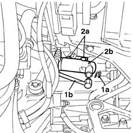

1280B30 OPERATING CYLINDER/CLUTCH HYDRAULIC ACTUATOR - R.R.
- Path
- Procedures > 18 CLUTCH > 1820 CLUTCH RELEASE CONTROLS > 1820B HYDRAULIC CLUTCH SYSTEM > 1280B30 OPERATING CYLINDER/CLUTCH HYDRAULIC ACTUATOR - R.R.
- Kind
- repair procedure (removal / refitting; the operation number is the code)
- Applies to
- all engines; all production periods
- Interactive page
- https://sloeber94.github.io/elrnDB-fMltpl/en/#/2891532
Applies to: engines: 1.9 JTD 8V; all production periods; only with equipment: Right hand drive
 Removing
Removing
 Refitting
RefittingApplies to: all engines; all production periods; only with equipment: Right hand drive
5530B52 Battery DRIP TRAY/SUPPORT - R.R.
Using syringe, drain the brake/clutch fluid from the reservoir.
1. Remove the clamp (1a) and disconnect the pipe (1b) from the operating cylinder/actuator.
2. Undo the fixing bolts (2a) and remove the operating cylinder (2b) from the engine compartment.

Applies to: all engines; all production periods; only with equipment: Right hand drive
Refitting
RemovingFit the operating cylinder and secure it with its bolts.
 | Fastening | Component | Ø | Value (daNm) |
|---|---|---|---|---|
- | Bolt | CLUTCH CONTROL HYDRAULIC ACTIVATOR | M8 | 1.8 |
Connect the pipe to the operating cylinder/actuator and secuire it with its clamp.
1820B08 Clutch release HYDRAULIC SYSTEM - Bleeding air and restoring level
Applies to: engines: 1.9 JTD 8V; all production periods; only with equipment: Right hand drive